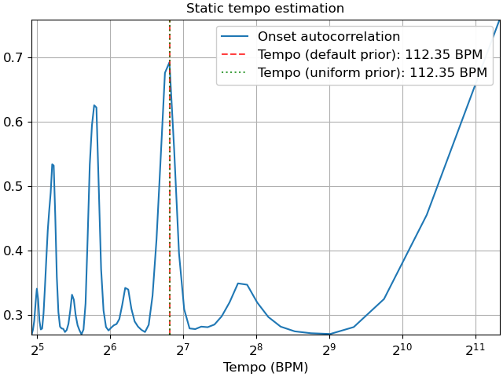
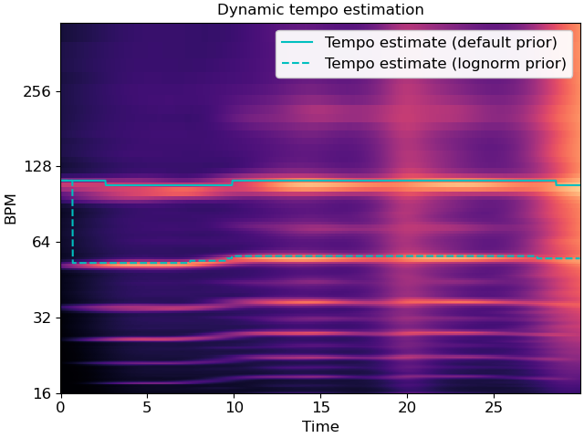

librosa.beat.tempo¶
- librosa.beat.tempo(*, y=None, sr=22050, onset_envelope=None, hop_length=512, start_bpm=120, std_bpm=1.0, ac_size=8.0, max_tempo=320.0, aggregate=<function mean>, prior=None)[source]¶
Estimate the tempo (beats per minute)
- Parameters
- ynp.ndarray [shape=(…, n)] or None
audio time series. Multi-channel is supported.
- srnumber > 0 [scalar]
sampling rate of the time series
- onset_envelopenp.ndarray [shape=(…, n)]
pre-computed onset strength envelope
- hop_lengthint > 0 [scalar]
hop length of the time series
- start_bpmfloat [scalar]
initial guess of the BPM
- std_bpmfloat > 0 [scalar]
standard deviation of tempo distribution
- ac_sizefloat > 0 [scalar]
length (in seconds) of the auto-correlation window
- max_tempofloat > 0 [scalar, optional]
If provided, only estimate tempo below this threshold
- aggregatecallable [optional]
Aggregation function for estimating global tempo. If None, then tempo is estimated independently for each frame.
- priorscipy.stats.rv_continuous [optional]
A prior distribution over tempo (in beats per minute). By default, a pseudo-log-normal prior is used. If given,
start_bpmandstd_bpmwill be ignored.
- Returns
- temponp.ndarray
estimated tempo (beats per minute). If input is multi-channel, one tempo estimate per channel is provided.
Notes
This function caches at level 30.
Examples
>>> # Estimate a static tempo >>> y, sr = librosa.load(librosa.ex('nutcracker'), duration=30) >>> onset_env = librosa.onset.onset_strength(y=y, sr=sr) >>> tempo = librosa.beat.tempo(onset_envelope=onset_env, sr=sr) >>> tempo array([143.555])
>>> # Or a static tempo with a uniform prior instead >>> import scipy.stats >>> prior = scipy.stats.uniform(30, 300) # uniform over 30-300 BPM >>> utempo = librosa.beat.tempo(onset_envelope=onset_env, sr=sr, prior=prior) >>> utempo array([161.499])
>>> # Or a dynamic tempo >>> dtempo = librosa.beat.tempo(onset_envelope=onset_env, sr=sr, ... aggregate=None) >>> dtempo array([ 89.103, 89.103, 89.103, ..., 123.047, 123.047, 123.047])
>>> # Dynamic tempo with a proper log-normal prior >>> prior_lognorm = scipy.stats.lognorm(loc=np.log(120), scale=120, s=1) >>> dtempo_lognorm = librosa.beat.tempo(onset_envelope=onset_env, sr=sr, ... aggregate=None, ... prior=prior_lognorm) >>> dtempo_lognorm array([ 89.103, 89.103, 89.103, ..., 123.047, 123.047, 123.047])
Plot the estimated tempo against the onset autocorrelation
>>> import matplotlib.pyplot as plt >>> # Convert to scalar >>> tempo = tempo.item() >>> utempo = utempo.item() >>> # Compute 2-second windowed autocorrelation >>> hop_length = 512 >>> ac = librosa.autocorrelate(onset_env, max_size=2 * sr // hop_length) >>> freqs = librosa.tempo_frequencies(len(ac), sr=sr, ... hop_length=hop_length) >>> # Plot on a BPM axis. We skip the first (0-lag) bin. >>> fig, ax = plt.subplots() >>> ax.semilogx(freqs[1:], librosa.util.normalize(ac)[1:], ... label='Onset autocorrelation', base=2) >>> ax.axvline(tempo, 0, 1, alpha=0.75, linestyle='--', color='r', ... label='Tempo (default prior): {:.2f} BPM'.format(tempo)) >>> ax.axvline(utempo, 0, 1, alpha=0.75, linestyle=':', color='g', ... label='Tempo (uniform prior): {:.2f} BPM'.format(utempo)) >>> ax.set(xlabel='Tempo (BPM)', title='Static tempo estimation') >>> ax.grid(True) >>> ax.legend()
Plot dynamic tempo estimates over a tempogram
>>> fig, ax = plt.subplots() >>> tg = librosa.feature.tempogram(onset_envelope=onset_env, sr=sr, ... hop_length=hop_length) >>> librosa.display.specshow(tg, x_axis='time', y_axis='tempo', cmap='magma', ax=ax) >>> ax.plot(librosa.times_like(dtempo), dtempo, ... color='c', linewidth=1.5, label='Tempo estimate (default prior)') >>> ax.plot(librosa.times_like(dtempo_lognorm), dtempo_lognorm, ... color='c', linewidth=1.5, linestyle='--', ... label='Tempo estimate (lognorm prior)') >>> ax.set(title='Dynamic tempo estimation') >>> ax.legend()
